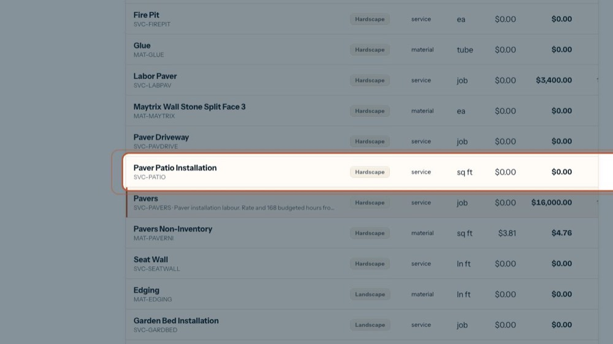
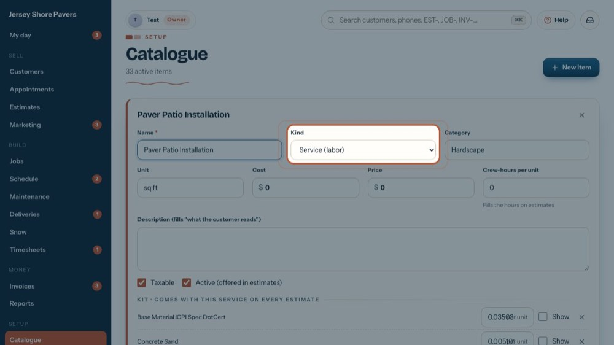
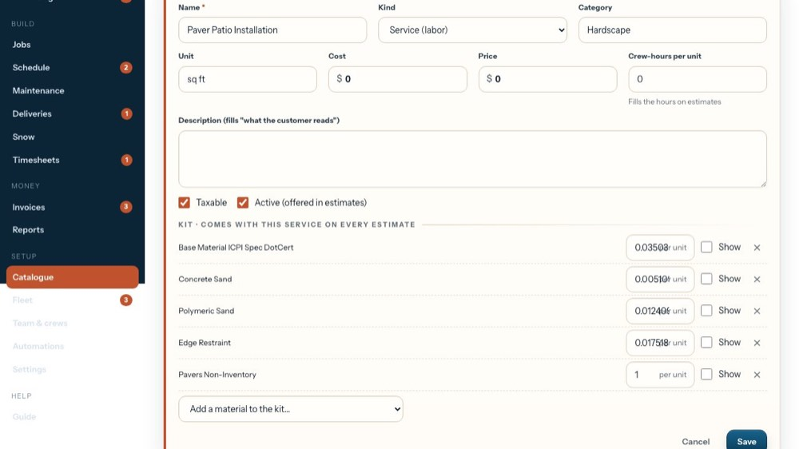
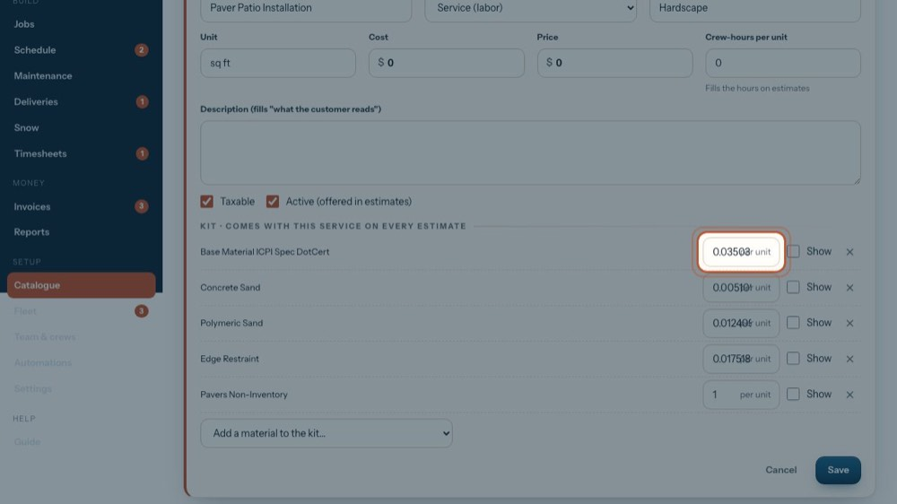
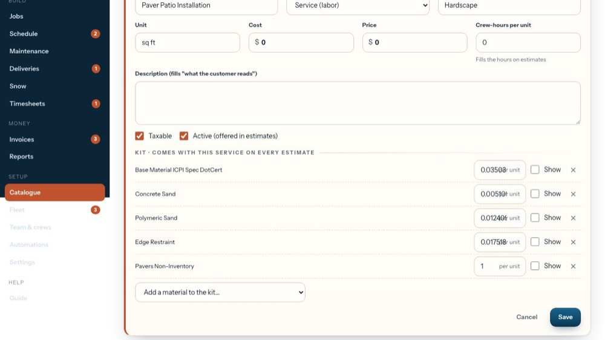
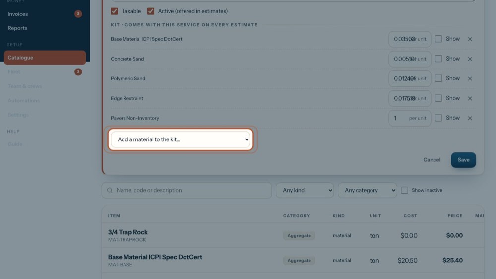
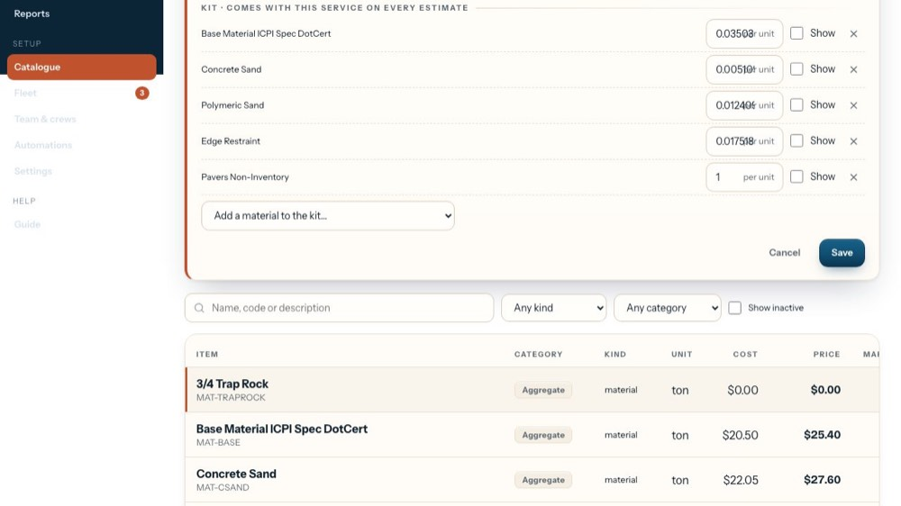
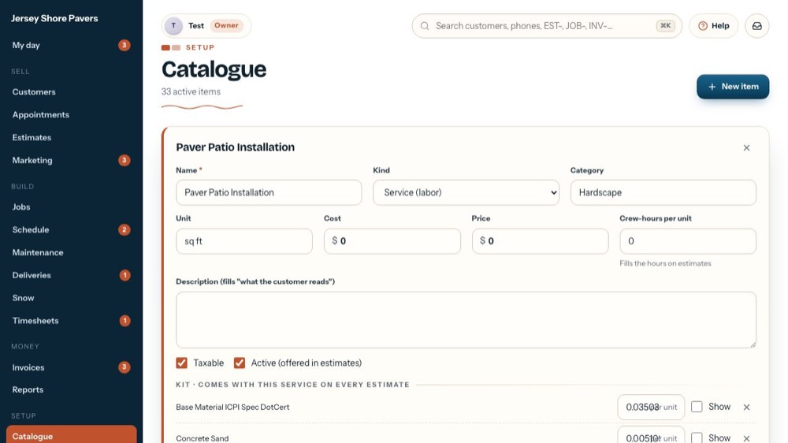

Set up a service's kit of materials
In the office app, press Help and type set up a service's kit of materials
: the tour plays on your own screen, with your own data.
-
 1
1Find the service
Only services have a kit. Any kind → Services lists just the services.
-

2Open the service
Click the service to open it. Here: Paver Patio Installation.
-

3It must be a service
Kind must be Service (labor). A new service gets its kit after its first save.
-

4The kit
The materials that come with this service on every estimate it is added to.
-

5How much per unit
How much of the material goes with one unit of the service, e.g. tons of base per sq ft of patio. The estimate works out the amount from the service's quantity.
-

6Show it to the customer?
Tick Show to list that material on the customer's copy. Unticked, it stays hidden from the customer.
-
7
Take one out
The x takes that material out of the kit. Nothing changes until you press Save.
-

8Add a material
Pick a material, equipment item or fee to add it to the kit at 1 per unit, then set the amount.
-

9Save
Save keeps the item and its kit. New estimates get the new kit; estimates already written don't change.
-

10Close it
The tour closes it without saving.